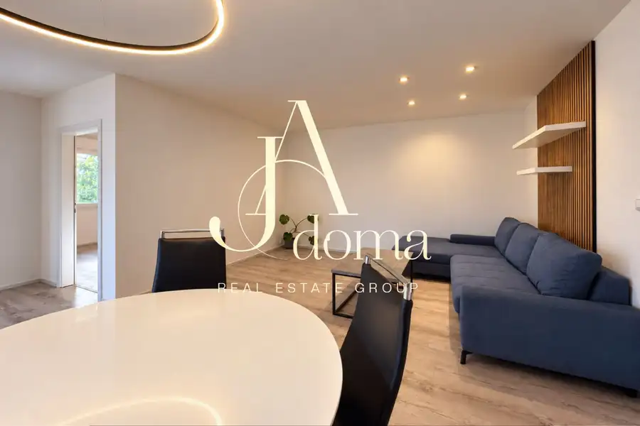
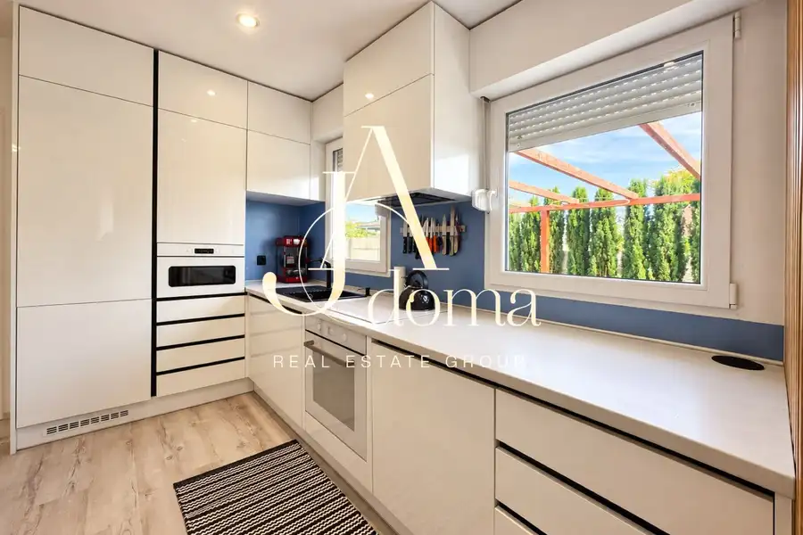
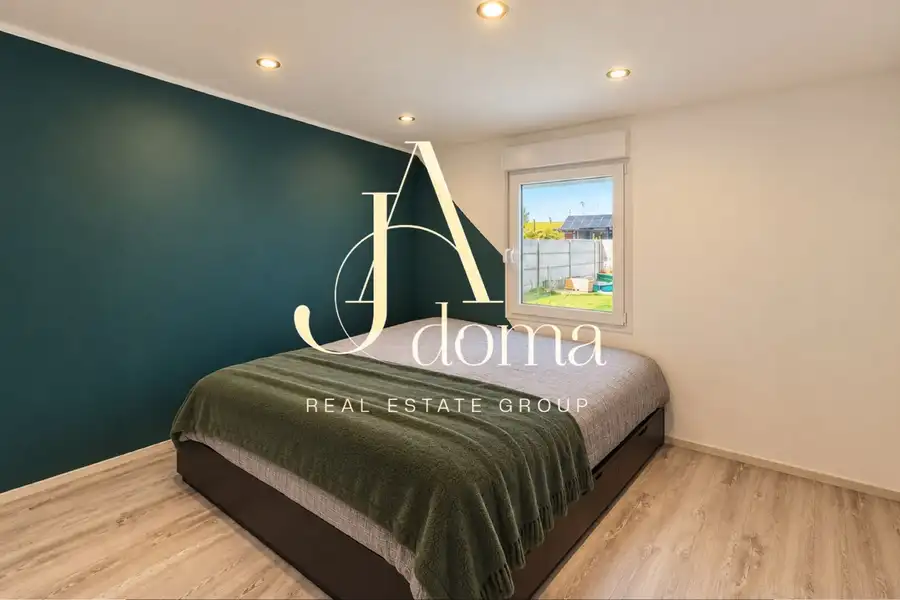
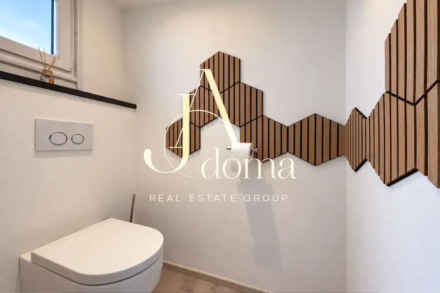

Exkluzívne na prendaj - 4-izbový rodinný dom s príjemnou atmosférou v Kráľova pri Senci
Kráľová pri Senci





- Dispozícia4-izbový
- Plocha80 m²
- Poschodie1. z 1
- StavKompletná rekonštrukcia
- Energetická triedaB
O nehnuteľnosti
Ponúkame na predaj útulný a kompletne zariadený 4-izbový rodinný dom (montovaný drevodom) typu bungalov s úžitkovou plochou 80 m². Dom sa nachádza v tichej a vyhľadávanej lokalite Kráľová pri Senci, v miestnej časti Bodov (Bodoház), menej ako 3 km od mesta Senec.Tento moderný a úsporný rodinný dom je nepodpivničený s valbovou strechou. Situovaný na rovinatom, kompletne upravenom pozemku s výmerou 443 m². Je ideálnym riešením pre 4-člennú rodinu, ktorá hľadá pokojné bývanie s rýchlym napojením na mesto a s možnosťou okamžitého nasťahovania.LOKALITAMiestna časť Bodov (Bodoház) ponúka neopakovateľnú atmosféru pokojného vidieka s minimálnym dopravným ruchom. Susedstvo tvorí nová, čistá štvrť rodinných domov. Vďaka vzdialenosti iba 3 km od Senca máte na dosah kompletnú občiansku vybavenosť (školy, škôlky, obchody, zdravotné strediská, kultúru a známe Slnečné jazerá), pričom Bratislava je vzdialená len cca 25 minút jazdy autom.DISPOZIČNÉ RIEŠENIE A INTERIÉRVstupná časť: Do domu sa vchádza z bočnej strany. Hneď vedľa hlavného vchodu sa nachádza praktická technická miestnosť so samostatným vstupom zvonku.Hygienické zázemie: Po vstupe do domu nájdete po ľavej strane kúpeľňu a samostatnú toaletu.Nočná časť: Oproti vchodovým dverám sa nachádza prvá samostatná izba. Ďalšie dve nepriechodné izby sú prístupné z centrálnej obývacej haly.Denná časť: Srdcom domu je rozľahlá a svetlá obývacia izba prepojená s kuchyňou, z ktorej sa vychádza priamo na terasu a do záhrady.Vybavenie a zariadenie: Dom sa predáva kompletne a vkusne zariadený, pripravený na okamžité užívanie bez ďalších investícií. Moderné a odolné vinylové podlahy v celom interiéri. Priestranná kuchynská linka na mieru vybavená všetkými zabudovanými spotrebičmi (chladnička s mrazničkou, indukčná varná doska, vstavaná umývačka riadu, mikrovlnná rúra).ZÁHRADA A EXTERIÉR Vyhradené parkovacie miesto pre jedno auto priamo na pozemku.Veľká terasa s drevenou pergolou a štýlovým betónovým stolom pre pohodlné usadenie až 10 ľudí.Zabudovaný kruhový bazén s priemerom 3,5 m na osvieženie počas horúcich letných dní.Udržiavaná trávnatá plocha a 3 vyvýšené záhony s napojením na automatickú závlahu.Praktický záhradný domček na úschovu kosačky a záhradného náradia + ďalší záhradný domček na uloženie bicyklov.TECHNICKÉ RIEŠENIE A INŽINIERSKE SIETEElektrina: Spoľahlivá prípojka ZSE – 230V aj 400V (3-fázový / motorový prúd).Kúrenie: Podlahové vykurovanie zabezpečené elektrickým kotlom značky Protherm, ktoré vytvára stabilný tepelný komfort.Voda: Zásobovanie z vlastnej studne (vynikajúca kvalita vody v rámci Žitného ostrova), čo výrazne znižuje prevádzkové náklady.Odpad: Riešený vlastnou, modernou čističkou odpadových vôd (Aquatec) s veľkým podzemným zberníkom na úžitkovú vodu (využiteľnú napr. na polievanie).Izolácia a okná: Kvalitné okná sú vybavené manuálnymi vonkajšími žalúziami, ktoré chránia interiér pred prehrievaním a samozrejme aj sieťkami proti hmyzu.PREHĽAD• Plocha pozemku: 443 m2• Zastavaná plocha: 81 m2• Rok kolaudácie: 2020• Energetický certifikát: B• Terén pozemku: rovinatý• Voda: vlastná studňa• Elektrina: na pozemku - 230 V, 400 V• Odpadové vody: čistička odpadových vôd• Vykurovanie: podlahové• Počet izieb / miestností: 4• Počet WC: 1• Počet spální: 3• Mesačné náklady: 200 eur (vratane ZSE a internet/Slovanet)Cena: 280 000 € Táto cena zahŕňa kompletné zariadenie nehnuteľnosti. Klientom poskytujeme kompletný právny a hypotekárny servis. V prípade riešenia hypotéky prostredníctvom nášho špecialistu garantujeme vrátenie rezervačného poplatku, ak banka úver neschváli. S nami kupujete bez starostí a s istotou bezpečného obchodu.Ponuka platí do vymazania inzerátu.Odporúčame vidieť osobne.KONTAKT:Ing. Mgr. Julia Kysla+421 951 520 028 (WhatsApp, Telegram)julia@jadoma.skIng. Bc. Andrii Kyslyi, RSc.+421 949 418 208 (WhatsApp, Telegram, Viber)andrej@jadoma.skNikita Kyslyi+421 951 520 027 (WhatsApp, Telegram)nikita@jadoma.skText, fotografie a video sú autorským dielom a majetkom RK JAdoma.
Parametre
- Cena vrátane energií
- Nie
- Druh
- 4 izbový byt
- Dátum zverejnenia
- 05. 10. 2026
- Energetický certifikát budovy
- B
- Podlažie
- 1
- Počet nadzemných podlaží
- 1
- Počet vonkajších parkovacích miest
- 2
- Rok výstavby
- 2020
- Stav nehnuteľnosti
- Kompletná rekonštrukcia
- Telekomunikácie
- Optická sieť
- Typ
- Predaj
- Typ konštrukcie
- Drevená
- Vybavenie
- Vonkajšie parkovacie miesto
- Vykurovanie
- Klimatizacia, Podlahové
- Úžitková plocha
- 80 m²
Kde to je


Mohlo by Vás zaujímať
 BytNové
725 000 €Exkluzívne na predaj - 3-izbový byt v projekte Sky Park v centre Bratislavy
Staré Mesto, Bratislava
3-izbový102 m²6. podlažie
BytNové
725 000 €Exkluzívne na predaj - 3-izbový byt v projekte Sky Park v centre Bratislavy
Staré Mesto, Bratislava
3-izbový102 m²6. podlažie
 BytNové
1 450 €PET-Friendly. Foreign-friendly. Kompletne zariadený 2-izbový byt s pivnicou a garážovým státím v prestížnom projekte Eurovea Tower
Staré Mesto, Bratislava
2-izbový58 m²12. podlažie
BytNové
1 450 €PET-Friendly. Foreign-friendly. Kompletne zariadený 2-izbový byt s pivnicou a garážovým státím v prestížnom projekte Eurovea Tower
Staré Mesto, Bratislava
2-izbový58 m²12. podlažie
 BytNové
1 900 €PET-Friendly | Foreign-friendly | Priestranný a svetlý 3-izbový byt v Panorama City na 18. poschodí s výhľadom na Dunaj a panorámu Bratislavy
Staré Mesto, Bratislava
3-izbový90 m²18. podlažie
BytNové
1 900 €PET-Friendly | Foreign-friendly | Priestranný a svetlý 3-izbový byt v Panorama City na 18. poschodí s výhľadom na Dunaj a panorámu Bratislavy
Staré Mesto, Bratislava
3-izbový90 m²18. podlažie